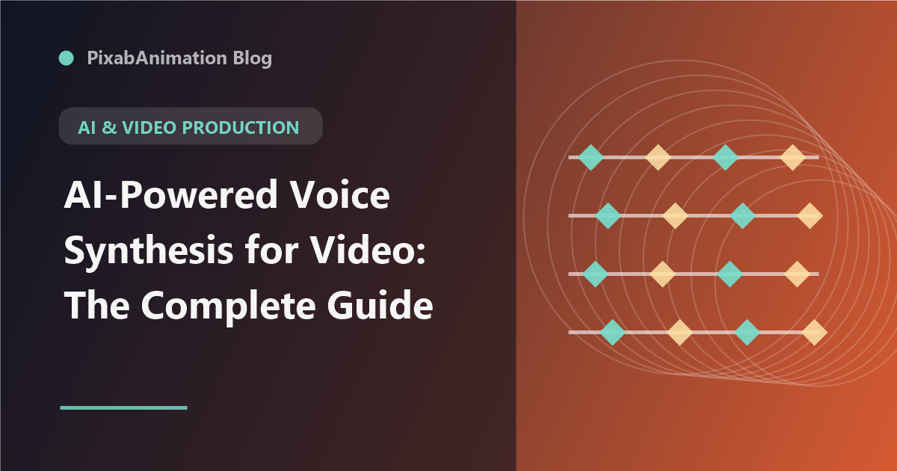

AI-Powered Voice Synthesis for Video: The Complete Guide

AI voice synthesis has transformed from robotic text-to-speech into a sophisticated technology capable of producing natural, expressive voiceovers. For video creators and motion designers, AI voice synthesis offers cost-effective narration, rapid iteration, and creative possibilities that traditional voiceover recording cannot match.
Leading AI Voice Platforms
ElevenLabs leads the market with studio-quality voice synthesis supporting multiple languages and emotional tones. Their speech-to-speech voice cloning requires minimal reference audio. OpenAI's TTS offers integrated voice synthesis for developers. Amazon Polly and Google Cloud Text-to-Speech provide enterprise-grade options. For creative professionals, ElevenLabs and Play.ht offer the most natural results for video voiceovers.
Applications in Video Production
AI voice synthesis serves multiple roles in video creation: explainer video narration with rapid script iteration, social media content that needs quick turnaround, multilingual versions without hiring multiple voice actors, character voices for animation and motion graphics, and temporary scratch tracks during editing. The ability to generate and refine voiceovers in minutes rather than days dramatically accelerates production timelines.
Quality and Authenticity
Modern AI voices have reached remarkable quality levels. Advances in prosody, emotional expression, and natural pacing make AI-generated voices increasingly indistinguishable from human recordings. However, nuances, raw emotion, and improvisational delivery remain areas where human voice actors excel. The best approach uses AI for efficiency on straightforward narration while retaining human voice actors for emotionally demanding content.
Ethical Considerations
Voice synthesis raises important ethical questions. Consent is essential when cloning a person's voice. Clear disclosure when content uses AI-generated voices builds audience trust. Understanding the legal landscape around voice rights and synthesis is important for professional use. Responsible creators use AI voice synthesis ethically, with transparency and respect for voice actors' rights.